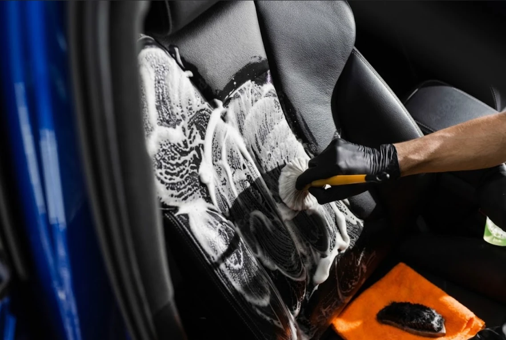

Accueil › Nettoyage intérieur à domicile
À domicile · Orléans & agglomération
Nettoyage intérieur de voiture à domicile
On vient chez vous, ou sur votre lieu de travail, avec tout le matériel. Nettoyage à la vapeur sèche : efficace, sain, et jusqu'à 3 litres d'eau seulement pour toute la voiture.
À domicile ou sur votre lieu de travail Sur rendez-vous Devis gratuit 2 à 3 L d'eau, sans produits agressifs
Pourquoi la vapeur
Vos sièges sont-ils vraiment propres ?
Poussière, taches, acariens, bactéries : même dans une voiture qui paraît propre, l'habitacle accumule des saletés incrustées, à l'origine des mauvaises odeurs.
La vapeur sèche haute température désincruste en profondeur, jusqu'aux taches les plus difficiles — auréoles, gras, stylo, maquillage — pour un habitacle parfaitement propre et assaini.
Sans produits agressifs et avec 2 à 3 litres d'eau seulement, c'est aussi la méthode la plus respectueuse de votre véhicule et de l'environnement.

Deux forfaits clairs
Prix TTC, hors frais éventuels de déplacement. Ils peuvent varier selon l'état du véhicule — au moindre doute, appelez-nous.
- Aspiration complète de l'habitacle
- Nettoyage des tapis
- Dépoussiérage, détachage et rénovation des plastiques
- Seuils, contours de porte et coffre
- Vitres intérieures · habitacle parfumé
- Toutes les prestations du forfait simple
- Shampoing vapeur des sièges tissu
- Ou dégraissage et soin des sièges cuir
Poils d'animaux, taches anciennes, véhicule très encrassé : un supplément peut s'appliquer, toujours annoncé avant l'intervention.

Cas particuliers
Restauration & remise à neuf de l'habitacle
Voiture d'occasion à récupérer, habitacle négligé depuis longtemps, poils de chien incrustés, moquettes tachées, odeurs tenaces : on traite aussi les cas lourds.
- Shampoing vapeur en profondeur des tissus, moquettes et coffre
- Dégraissage et nourrissage des cuirs
- Rénovation des plastiques ternis, seuils et passages de porte
- Traitement des odeurs
Le devis est établi après un état des lieux, en photo ou de visu.
On s'occupe de votre intérieur ?
Réponse rapide avec un créneau et un tarif adaptés à votre véhicule.
Aussi chez CKLEAN AUTO 45 : Lustrage & polissage Protection céramique Zone d'intervention